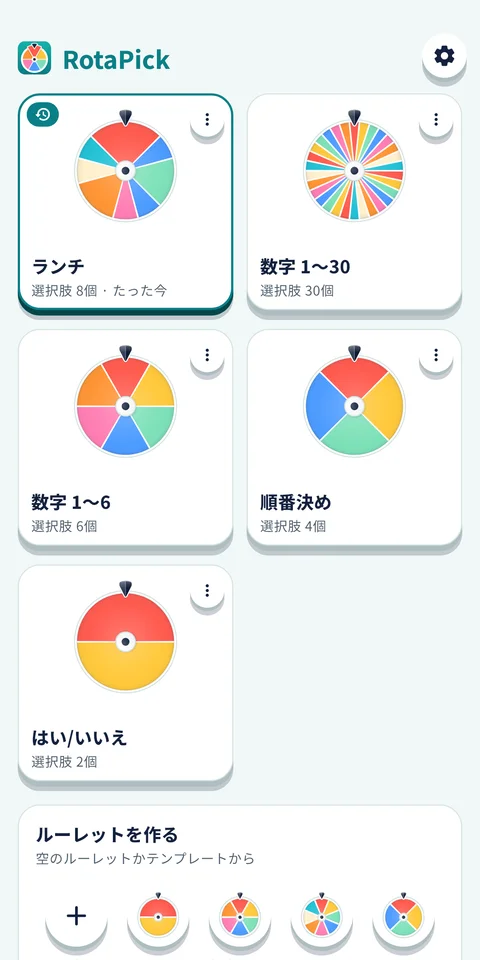
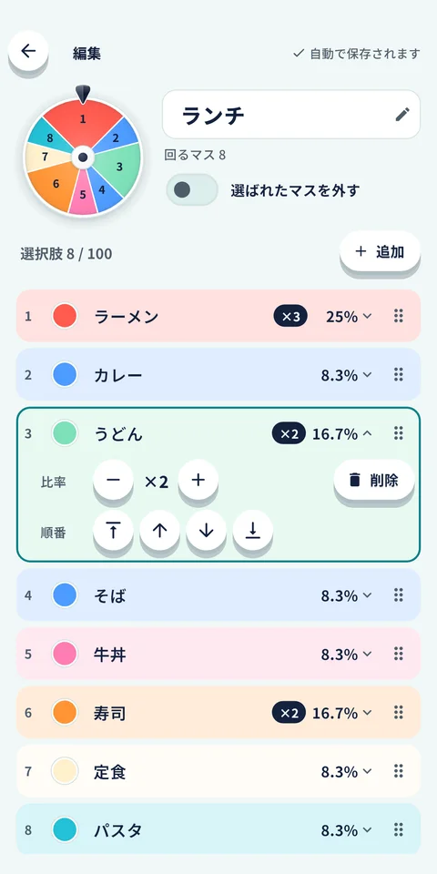
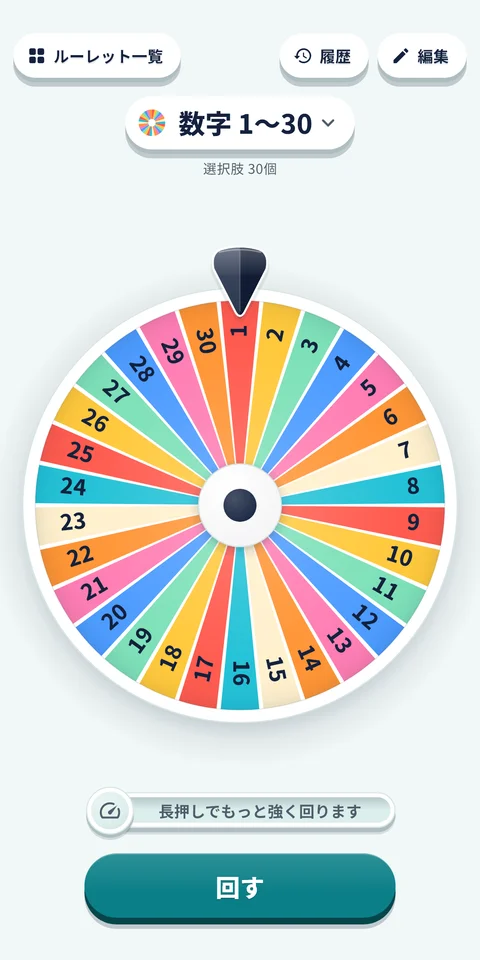
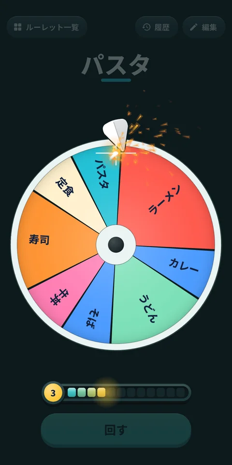

RotaPickは、選択肢を入力するとカラフルなルーレットになり、回して針の下に止まったマスが選ばれるアプリです。ランチのメニュー、順番決め、発表の順番、当番、チーム分け、はい/いいえなど、迷うことを手軽に決められます。
スクリーンショット







主な機能
- 使い方 ひとつのルーレットに選択肢を2〜100個入力すると、マスごとに色が付きます。「回す」を軽くタップすると標準の強さで回り、長押しすると強さバーが1秒ほどで満ちて、指を離した強さで回ります。指でルーレットをはじいても回せます。針がマスの境目を通るたびにカチッという音と軽い振動があり、止まると選ばれたマスが飛び出し、そのマスの色が画面いっぱいに広がって、結果が大きく表示されます。マスの色は8色から選ぶか、隣のマスと違う色に自動で決まり、マスが30個を超えると文字は小さくなります。回転時間は設定で約3秒、5秒、8秒から選べます。
- 公平さが目で見えます マスの広さがそのまま確率です。マスごとに比率を×1〜×10で設定すると、その分だけマスが広くなり、比率がルーレット上にそのまま見えます。隠れた比率はありません。結果は事前に決まっておらず、止まった角度でマスが決まるので、強さをうまく合わせても狙ったマスを出すことはできません。
- 「選ばれたマスを外す」 「選ばれたマスを外す」をオンにすると、針が止まったマスは「元に戻す」を押すまでルーレットから外れます。順番決めや名前の抽選、ひとつずつ割り当てたいときに便利です。
- テンプレートですぐ開始 アプリを開くと最後に使ったルーレットがすぐ表示され、最初に入っているルーレットはランチです。「ルーレットを作る」から、空のルーレットか、はい/いいえ、数字 1〜6、ランチ、順番決めのテンプレートで始められます。ランチは日本でよく食べられる8品です。変更はそのつど自動で保存されるので、保存ボタンはありません。
- ルーレットの保存と履歴 ルーレットはいくつでも保存でき、名前の変更、複製、削除ができます。長押ししてドラッグすると並べ替えられます。ルーレット一覧は最近使ったものが先頭に並びます。編集では、行をドラッグするか、行を開いて並べ替えボタンで選択肢の順番を変えられます。ルーレットごとに直近50件の結果が時刻付きで「履歴」に残り、履歴は削除できます。「よく選ばれたマス」では、選ばれた回数をマスの広さと並べて見られます。結果画面の「共有」から、結果をテキストで送れます。
- 見た目と音 標準は明るい画面で、端末のダークモードに合わせます。針がマスの境目を通ると火花が散り、結果が出ると花火が上がります。効果音は木のカチッという音、マリンバの結果音、チャイムです。設定の「サウンドと効果」で効果音とバイブレーションをオフにでき、「エフェクトを減らす」をオンにすると火花と花火も出ません。
- ご利用について サブスクリプションも有料ロックもアプリ内課金もなく、すべての機能を使えます。広告は画面下のバナー1つだけで、全画面広告はありません。サーバーやログインなしでオフラインで使え、ルーレット・履歴・設定は端末にだけ保存されます。言語は日本語、英語、韓国語、中国語(簡体字・繁体字)で、設定の「言語」で切り替えられます。
対応プラットフォーム
Android
近日公開
ユーザーマニュアル
RotaPick アプリのユーザーマニュアルをご確認いただけます。
プライバシーポリシー
RotaPick アプリのプライバシーポリシーをご覧いただけます。